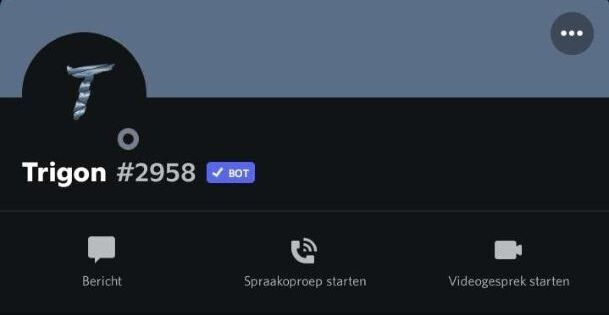
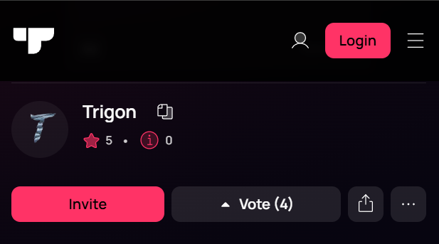

Trigon Discord Botu
Trigon Discord Botu ile Edindiğimiz Tecrübeler
2020 yılında Salih Abdullah Özler ile birlikte
geliştirdiğimiz Trigon Discord botu, yenilikçi özellikler sunarak Discord kullanıcılarının deneyimini
iyileştirmeyi amaçladı. Bu süreçte hem teknik becerilerimizi geliştirdik hem de proje yönetimi açısından
önemli deneyimler kazandık.
Başlıca Öğrenimlerimiz:
Bot Geliştirme Temelleri: Discord botlarının nasıl çalıştığını, API kullanımı ve bot fonksiyonlarını
yapılandırmayı öğrendik. Kullanıcı etkileşimlerini optimize etmek için JavaScript ve diğer yazılım araçlarını
aktif olarak kullandık.
Proje Yönetimi ve İş Birliği: Salih Abdullah
Özler ile proje boyunca etkili bir iş birliği yürüttük. Takım çalışması ve iletişim, projenin
başarısında önemli bir rol oynadı.
Discord Onayı Süreci: 21 Kasım 2020 tarihinde Discord'dan onay almak için başvuruda bulunduk ve 22
Kasım 2020'de başvurumuz olumlu sonuçlandı. Bu, botumuzun daha geniş bir kitleye hizmet vermesine olanak
tanıdı.
Kullanıcı Deneyimi Odaklı Geliştirme: Kullanıcı geri bildirimlerini dikkate alarak botun
özelliklerini sürekli olarak güncelledik ve geliştirdik. Bu, yazılım geliştirme sürecinde kullanıcı odaklı
yaklaşımın önemini anlamamızı sağladı.
Trigon Discord Botu, öğrenme ve gelişim yolculuğumuzun bir simgesi olarak bizi gururlandı. Bu
süreçte edindiğimiz bilgi ve tecrübeler, gelecekteki projelerimiz için sağlam bir temel oluşturdu.

